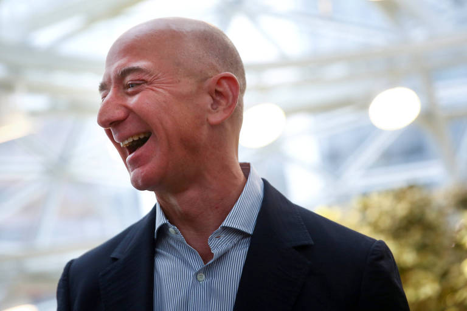

|  |
Jeff bezos diz que planeja doar maior parte de sua fortuna para a caridade O fundador da amazon Jeff Bezos, planeja doar a maioria de seu patrimônio líquido de US$ 124 bilhões durante sua vida, dizendo à CNN em uma entrevista exclusiva que dedicará a maior parte de sua riqueza ao combate às mudanças climáticas e ao apoio às pessoas que podem unificar a humanidade diante de profundas divisões sociais e políticas. Embora a promessa de Bezos tenha sido vaga em detalhes, marca a primeira vez que ele anunciou que planeja doar a maior parte de seu dinheiro. Os críticos repreenderam Bezos por não assinar o Giving Pledge, uma promessa de centenas das pessoas mais ricas do mundo de doar a maior parte de sua riqueza para causas de caridade. ler mais |